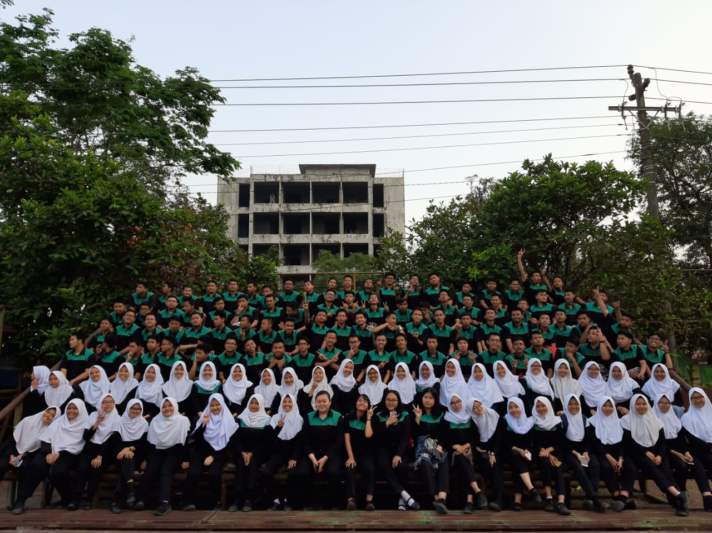

Jurusan
Teknik Jaringan Akses
Teknik Jaringan Akses Telekomunikasi adalah program ilmu kejuruan yang mempelajari tentang jaringan, baik itu jaringan Akses Kabel (Tembaga, Coaxial, Fiber Optik) maupun Nirkabel (Radio, Gelombang Mikro).
Lulusan jurusan ini sangat diperhitungkan dalam dunia industri pekerjaan dunia, terutama perusahaan yang bergerak di bidang telekomunikasi seperti Telkom, Indosat, XL, dan lainnya. Hal ini disebabkan karena tidak seimbang nya tuntutan perkembangan teknologi telekomunikasi dengan jumlah tenaga kerja.
Materi Keahlian dalam jurusan ini yaitu
- Sistem Telekomunikasi
- Jaringan Akses Fiber Optik
- Perangkat Terminal Pelanggan (Modem, Router dan lain-lain)
- Jaringan Akses Tembaga
- Jaringan Akses Optik.
Rekayasa Perangkat Lunak
Rekayasa Perangkat Lunak adalah program ilmu kejuruan yang mempelajari tentang pengembangan perangkat lunak, termasuk pembuatan, pemeliharaan, manajemen organisasi pengembangan perangkat lunak dan manajemen kualitas.
Lulusan jurusan ini sangat diperhitungkan dalam dunia teknologi dan informasi, terutama perusahaan ataupun startup yang bergerak di bidang pengembangan dan pelayanan TI seperti Bukalapak, Tokopedia, dan lainnya serta dapat membuka usaha sendiri dibidang komputer ataupun bisa juga bekerja di perusahaan teknologi.
Materi keahlian dalam jurusan ini yaitu
- Proses Pengembangan Perangkat Lunak
- Web Developer
- Mobile Developer
- UI/UX Designer
- UX Researcher
- Animator
Teknik Komputer Jaringan
TKJ adalah sebuah program ilmu kejuruan dibidang teknologi informasi dan komunikasi yang berhubungan dengan kemampuan pemrograman komputer, perakitan komputer dan jaringan komputer, serta pengoperasian perangkat lunak komputer.
Lulusan jurusan ini sangat diperhitungkan dalam dunia teknologi dan informasi, terutama dalam bidang jaringan dan perangkat keras.
Materi Keahlian dalam jurusan ini yaitu
- Administrasi Jaringan (LAN-WAN)
- Cyber Security
- Administrator Jaringan
- Jaringan Nirkabel
- Internet Of Things